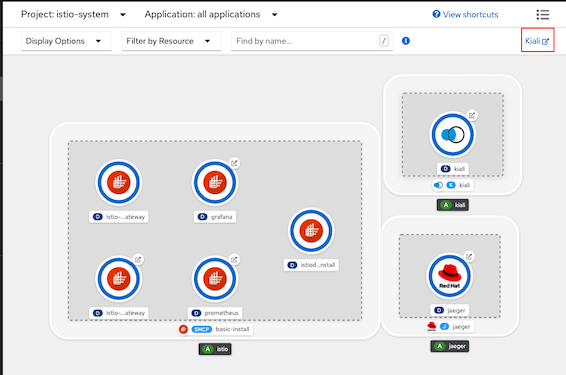
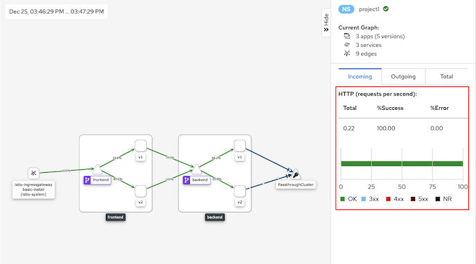
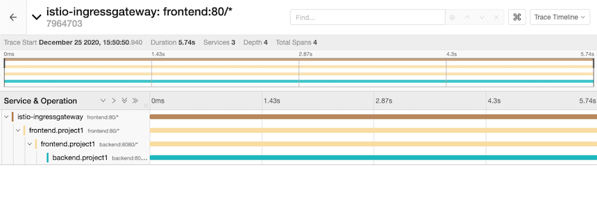
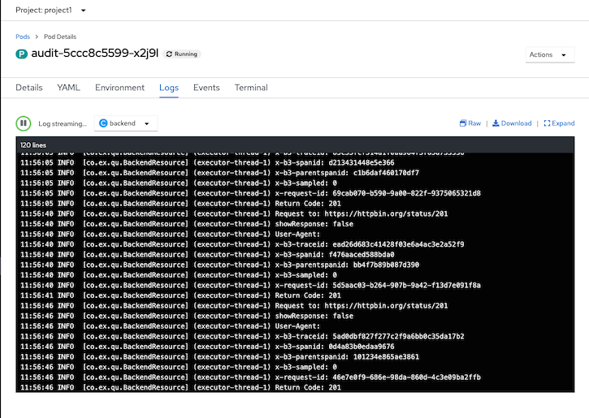
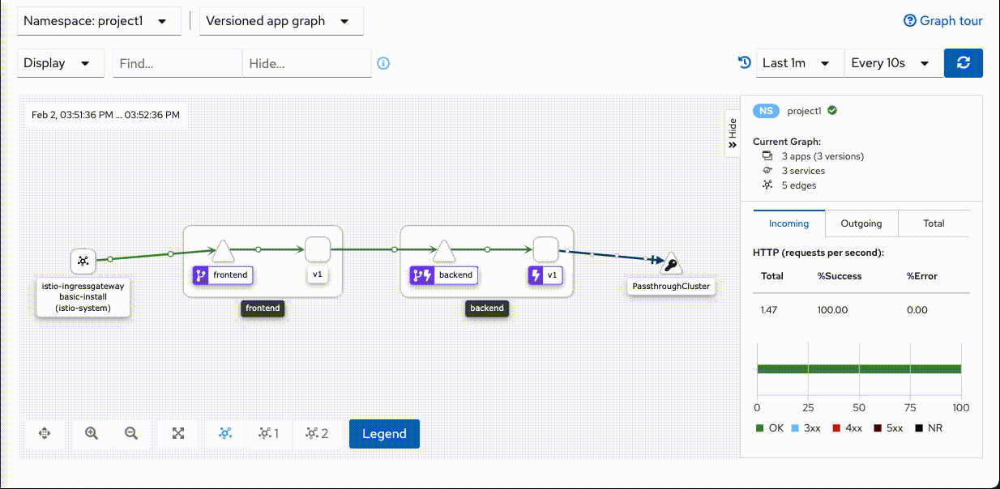
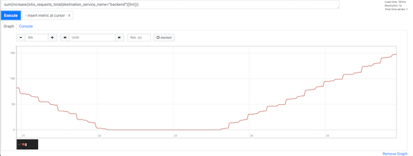
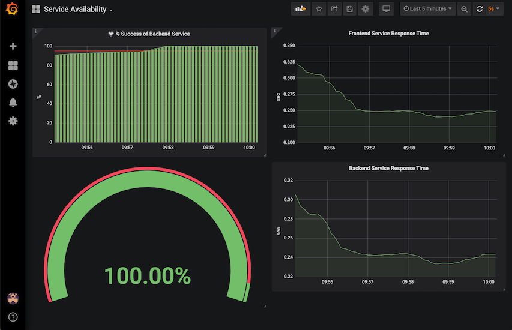

OpenShift Service Mesh
- OpenShift Service Mesh
- Overview
- Setup Control Plane and sidecar
- Create Istio Gateway
- Weight-Routing with Istio Virtual Service
- Routing by condition based on URI
- A/B with Istio Virtual Service
- Traffic Analysis
- Distributed Tracing
- Traffic Mirroring (Dark Launch)
- Envoy Access Log
- Circuit Breaker
- Secure with mTLS
- Service Level Objective (SLO)
- Control Plane with High Availability
Overview
Sample application

Setup Control Plane and sidecar
- Install following Operators from OperatorHub
- ElasticSearch
- Jaeger
- Kiali
- OpenShift Service Mesh
Create control plane by create ServiceMeshControlPlane CRD
oc new-project istio-system oc create -f manifests/smcp.yaml -n istio-systemCheck for control plane(get-smcp-status.sh)
bin/get-smcp-status.sh istio-systemJoin project1 into control plane
Review ServiceMeshMemberRoll CRD
apiVersion: maistra.io/v1 kind: ServiceMeshMemberRoll metadata: name: default spec: members: - project1Create data plane project
oc new-project project1Apply ServiceMeshMemberRoll
oc create -f manifests/smmr.yaml -n istio-systemCheck for ServiceMeshMemberRoll status
oc describe smmr/default -n istio-system | grep -A2 Spec:
Deploy sidecar to frontend app in project1
oc apply -f manifests/frontend.yaml -n project1 oc patch deployment/frontend-v1 -p '{"spec":{"template":{"metadata":{"annotations":{"sidecar.istio.io/inject":"true"}}}}}' -n project1 oc patch deployment/frontend-v2 -p '{"spec":{"template":{"metadata":{"annotations":{"sidecar.istio.io/inject":"true"}}}}}' -n project1
Check for sidecar in frontend-v1 and frontend-v2 pods
oc get pods -n project1Sample output
NAME READY STATUS RESTARTS AGE frontend-v1-577b98f48c-6j5zg 2/2 Running 0 15s frontend-v1-c5d4648f9-7jfk2 1/1 Terminating 0 13m frontend-v2-5cd968bc59-cwsd8 2/2 Running 0 14s frontend-v2-5d4dbdbc9-k6787 1/1 Terminating 0 13mCheck developer console

Check frontend service which set slector to both v1 and v2
selector: app: frontendCreate frontend service
oc create -f manifests/frontend-service.yaml -n project1
Create Istio Gateway
Create Gateway for frontend app
- Check for cluster's sub-domain
SUBDOMAIN=$(oc whoami --show-console|awk -F'apps.' '{print $2}') echo $SUBDOMAIN Review Gateway CRD, Replaced SUBDOMAIN with cluster's sub-domain
apiVersion: networking.istio.io/v1alpha3 kind: Gateway metadata: name: frontend-gateway spec: selector: istio: ingressgateway # use istio default controller servers: - port: number: 80 name: http2 protocol: HTTP hosts: - 'frontend.apps.SUBDOMAIN'Replace SUBDOMAIN with your clsuter sub-domain and Create gateway
oc apply -f manifests/frontend-gateway.yaml -n istio-systemor use following bash command
SUBDOMAIN=$(oc whoami --show-console|awk -F'apps.' '{print $2}') cat manifests/frontend-gateway.yaml | sed 's/SUBDOMAIN/'$SUBDOMAIN'/'|oc apply -n istio-system -f -
- Check for cluster's sub-domain
Create Destination Rule for frontend v1 and frontend v2
Review Destination Rule CRD
apiVersion: networking.istio.io/v1alpha3 kind: DestinationRule metadata: name: frontend spec: host: frontend subsets: - name: v1 labels: app: frontend version: v1 trafficPolicy: loadBalancer: simple: ROUND_ROBIN - name: v2 labels: app: frontend version: v2 trafficPolicy: loadBalancer: simple: ROUND_ROBINCreate destination rule
oc apply -f manifests/frontend-destination-rule.yaml -n project1
Create Virtual Service for frontend app
Review Virtual Service CRD, Replace SUBDOMAIN with cluster's sub-domain.
apiVersion: networking.istio.io/v1alpha3 kind: VirtualService metadata: name: frontend spec: hosts: - frontend.apps.SUBDOMAIN gateways: - istio-system/frontend-gateway http: - route: - destination: port: number: 8080 host: frontend.project1.svc.cluster.localReplace SUBDOMAIN with cluster subdomain and create virtual service
oc apply -f manifests/frontend-virtual-service.yaml -n project1or use following bash command
SUBDOMAIN=$(oc whoami --show-console|awk -F'apps.' '{print $2}') cat manifests/frontend-virtual-service.yaml | sed 's/SUBDOMAIN/'$SUBDOMAIN'/'|oc apply -n project1 -f -Check that route is automatically created
oc get route -n istio-system | grep istio-system-frontend-gatewaySample outout
istio-system-frontend-gateway-fmlsp frontend.apps.cluster-ba08.ba08.example.opentlc.com istio-ingressgateway http2 istio-ingressgateway http2 None<!-- - Create Route (configured with Istio Gateway) for frontend app
Review Route, Replace SUBDOMAIN with cluster's subdomain
apiVersion: v1 kind: Route metadata: name: frontend spec: host: frontend.apps.SUBDOMAIN port: targetPort: http2 to: kind: Service name: istio-ingressgateway weight: 100 wildcardPolicy: NoneReplace SUBDOMAIN with cluster subdomain then create Route
oc apply -f manifests/frontend-route-istio.yaml -n istio-systemor use following bash command
bash SUBDOMAIN=$(oc whoami --show-console|awk -F'apps.' '{print $2}') cat manifests/frontend-route-istio.yaml | sed 's/SUBDOMAIN/'$SUBDOMAIN'/'|oc apply -n project1 -f --->
Test with cURL
FRONTEND_ISTIO_ROUTE=$(oc get route -n istio-system|grep istio-system-frontend-gateway |awk '{print $2}')
curl http://$FRONTEND_ISTIO_ROUTE
Weight-Routing with Istio Virtual Service
Set weight routing between 2 services with virtual service
- Check for virtual service with weight routing, Replace SUBDOMAIN with cluster's subdomain.
or use following bash commandapiVersion: networking.istio.io/v1alpha3 kind: VirtualService metadata: name: frontend spec: hosts: - frontend.apps.SUBDOMAIN gateways: - istio-system/frontend-gateway http: - route: - destination: port: number: 8080 host: frontend.project1.svc.cluster.local subset: v1 weight: 100 - destination: port: number: 8080 host: frontend.project1.svc.cluster.local subset: v2 weight: 0
SUBDOMAIN=$(oc whoami --show-console|awk -F'apps.' '{print $2}') cat manifests/frontend-virtual-service-with-weight-routing.yaml | sed 's/SUBDOMAIN/'$SUBDOMAIN'/'|oc apply -n project1 -f -Apply virtual service for Blue/Green deployment with route all traffic to v1
oc apply -f manifests/frontend-virtual-service-with-weight-routing.yaml -n project1
- Test with cURL to verify that all requests are routed to v1
Blue/Green deployment by route all requests to v2
oc patch virtualservice frontend --type='json' -p='[{"op":"replace","path":"/spec/http/0","value":{"route":[{"destination":{"host":"frontend.project1.svc.cluster.local","port":{"number":8080},"subset":"v1"},"weight":0},{"destination":{"host":"frontend.project1.svc.cluster.local","port":{"number":8080},"subset":"v2"},"weight":100}]}}]' -n project1Test with cURL to verify that all requests are routed to v2
Canary deployment by weight requests between v1 and v2 with 70% and 30%
oc patch virtualservice frontend --type='json' -p='[{"op":"replace","path":"/spec/http/0","value":{"route":[{"destination":{"host":"frontend.project1.svc.cluster.local","port":{"number":8080},"subset":"v1"},"weight":70},{"destination":{"host":"frontend.project1.svc.cluster.local","port":{"number":8080},"subset":"v2"},"weight":30}]}}]' -n project1
- Check for virtual service with weight routing, Replace SUBDOMAIN with cluster's subdomain.
Test canary deployment
Run 100 requests
FRONTEND_ISTIO_ROUTE=$(oc get route -n istio-system|grep istio-system-frontend-gateway |awk '{print $2}') COUNT=0 rm -f result.txt while [ $COUNT -lt 100 ]; do OUTPUT=$(curl -s $FRONTEND_ISTIO_ROUTE/version) printf "%s\n" $OUTPUT >> result.txt printf "%s\n" $OUTPUT sleep .2 COUNT=$(expr $COUNT + 1) doneCheck result for comparing percentage of requests to v1 and v2
printf "Version 1: %s\n" $(cat result.txt | grep "1.0.0" | wc -l) printf "Version 2: %s\n" $(cat result.txt | grep "2.0.0" | wc -l) rm -f result.txt
Routing by condition based on URI
- Set conditional routing between 2 services with virtual service
- Check for virtual service by URI, Replace SUBDOMAIN with cluster's subdomain. Condition with regular expression
- Route to v1 if request URI start with "/ver" and end with "1"
apiVersion: networking.istio.io/v1alpha3 kind: VirtualService metadata: name: frontend spec: hosts: - frontend.apps.SUBDOMAIN gateways: - istio-system/frontend-gateway http: - match: - uri: regex: /ver(.*)1 rewrite: # Rewrite URI back to / because frontend app not have /ver(*)1 uri: "/" route: - destination: host: frontend port: number: 8080 subset: v1 - route: - destination: host: frontend port: number: 8080 subset: v2
- Route to v1 if request URI start with "/ver" and end with "1"
- Check for virtual service by URI, Replace SUBDOMAIN with cluster's subdomain. Condition with regular expression
Apply virtual service
oc apply -f manifests/frontend-virtual-service-with-uri.yaml -n project1or use following bash command
SUBDOMAIN=$(oc whoami --show-console|awk -F'apps.' '{print $2}') cat manifests/frontend-virtual-service-with-uri.yaml | sed 's/SUBDOMAIN/'$SUBDOMAIN'/'|oc apply -n project1 -f -Test with URI /version1 and /ver1
FRONTEND_ISTIO_ROUTE=$(oc get route -n istio-system|grep istio-system-frontend-gateway |awk '{print $2}') curl $FRONTEND_ISTIO_ROUTE/version1 curl $FRONTEND_ISTIO_ROUTE/vers1 curl $FRONTEND_ISTIO_ROUTE/ver1Test with URI /
FRONTEND_ISTIO_ROUTE=$(oc get route -n istio-system|grep istio-system-frontend-gateway |awk '{print $2}') curl $FRONTEND_ISTIO_ROUTE/
A/B with Istio Virtual Service
A/B testing by investigating User-Agent header with Virtual Service, Replace SUBDOMAIN with cluster's sub-domain.
- If HTTP header User-Agent contains text Firewall, request will be routed to frontend v2
apiVersion: networking.istio.io/v1alpha3 kind: VirtualService metadata: name: frontend spec: hosts: - frontend.apps.SUBDOMAIN gateways: - istio-gateway/frontend-gateway http: - match: - headers: user-agent: regex: (.*)Firefox(.*) route: - destination: host: frontend port: number: 8080 subset: v2 - route: - destination: host: frontend port: number: 8080 subset: v1Apply Virtual Service
oc apply -f manifests/frontend-virtual-service-with-header.yaml -n project1or use following bash command
SUBDOMAIN=$(oc whoami --show-console|awk -F'apps.' '{print $2}') cat manifests/frontend-virtual-service-with-header.yaml | sed 's/SUBDOMAIN/'$SUBDOMAIN'/'|oc apply -n project1 -f -Test with cURL with HTTP header User-Agent contains Firefox
FRONTEND_ISTIO_ROUTE=$(oc get route -n istio-system|grep istio-system-frontend-gateway |awk '{print $2}') curl -H "User-Agent:Mozilla/5.0 (Macintosh; Intel Mac OS X 10.15; rv:78.0) Gecko/20100101 Firefox/78.0" $FRONTEND_ISTIO_ROUTETraffic Analysis
Deploy backend application
oc apply -f manifests/backend.yaml -n project1 oc apply -f manifests/backend-destination-rule.yaml -n project1 oc apply -f manifests/backend-virtual-service-v1-v2-50-50.yaml -n project1 oc get pods -n project1Optional: Draw connetion from frontend to backend in Developer Console
oc annotate deployment frontend-v1 'app.openshift.io/connects-to=[{"apiVersion":"apps/v1","kind":"Deployment","name":"backend-v1"},{"apiVersion":"apps/v1","kind":"Deployment","name":"backend-v2"}]' -n project1 oc annotate deployment frontend-v2 'app.openshift.io/connects-to=[{"apiVersion":"apps/v1","kind":"Deployment","name":"backend-v1"},{"apiVersion":"apps/v1","kind":"Deployment","name":"backend-v2"}]' -n project1
Configure frontend to request to backend
oc set env deployment/frontend-v1 BACKEND_URL=http://backend:8080/ -n project1 oc set env deployment/frontend-v2 BACKEND_URL=http://backend:8080/ -n project1Check Kiali Console
login to OpenShift Developer Console, select project istio-system and open Kiali console

- Login to Kiali Console and select Graph
- Namespace: select checkbox "project1"
- Display: select checkbox "Requests percentage" and "Traffic animation"
- Run following command
oc patch virtualservice frontend --type='json' -p='[{"op":"replace","path":"/spec/http/0","value":{"route":[{"destination":{"host":"frontend.project1.svc.cluster.local","port":{"number":8080},"subset":"v1"},"weight":70},{"destination":{"host":"frontend.project1.svc.cluster.local","port":{"number":8080},"subset":"v2"},"weight":30}]}}]' -n project1 FRONTEND_ISTIO_ROUTE=$(oc get route -n istio-system|grep istio-system-frontend-gateway |awk '{print $2}') while [ 1 ]; do OUTPUT=$(curl -s $FRONTEND_ISTIO_ROUTE) printf "%s\n" $OUTPUT sleep .2 done Check Kiali Console

Traffic analysis for frontend app. Select Application->frontend->inbound traffic and outbound traffic

Distributed Tracing
Distributed tracing with Jaeger. Select tab Tracing
Overall tracing for frontend app

Login to Jaeger by select "View in Tracing"

Drill down to tracing information

Show feature config on the fly in service --> frontend v2 --> action
Traffic Mirroring (Dark Launch)
Deploy audit app and mirror every requests that frontend call backend to audit app
oc apply -f manifests/audit-app.yaml -n project1 oc get pods -n project1Update backend virtual service to mirror requests to audit app.
oc apply -f manifests/backend-virtual-service-mirror.yaml -n project1Use cURL to call frontend and check audit's pod log by CLI (with another terminal) or Web Console
- cURL frontend
FRONTEND_ISTIO_ROUTE=$(oc get route -n istio-system|grep istio-system-frontend-gateway |awk '{print $2}') curl $FRONTEND_ISTIO_ROUTE- View audit log
oc logs -f $(oc get pods --no-headers | grep audit|head -n 1|awk '{print $1}') -c backend -n project1
Envoy Access Log
- Envoy access log already enabled with ServiceMeshControlPlane CRD
proxy: accessLogging: envoyService: enabled: false file: encoding: TEXT name: /dev/stdout Check access log
oc logs -f $(oc get pods -n project1 --no-headers|grep frontend|head -n 1|awk '{print $1}') -c istio-proxy -n project1Sample output
[2020-12-25T10:33:04.848Z] "GET / HTTP/1.1" 200 - "-" "-" 0 103 5750 5749 "-" "-" "0c3ce34a-f5a0-9340-b84f-3631cd8eb444" "backend:8080" "10.128.2.133:8080" outbound|8080|v2|backend.project1.svc.cluster.local 10.128.2.131:48300 172.30.116.252:8080 10.128.2.131:36992 - - [2020-12-25T10:33:04.846Z] "GET / HTTP/1.1" 200 - "-" "-" 0 184 5756 5755 "184.22.250.124,10.131.0.4" "curl/7.64.1" "0c3ce34a-f5a0-9340-b84f-3631cd8eb444" "frontend.apps.cluster-1138.1138.example.opentlc.com" "127.0.0.1:8080" inbound|8080|http|frontend-v1.project1.svc.cluster.local 127.0.0.1:56540 10.128.2.131:8080 10.131.0.4:0 outbound_.8080_.v1_.frontend.project1.svc.cluster.local default
Circuit Breaker
Configure our application to contains only frontend-v1 and backend-v1 and scale backend to 3 pods.
oc apply -f manifests/frontend.yaml -n project1 oc patch deployment/frontend-v1 -p '{"spec":{"template":{"metadata":{"annotations":{"sidecar.istio.io/inject":"true"}}}}}' -n project1 oc apply -f manifests/backend.yaml -n project1 oc delete deployment frontend-v2 -n project1 oc delete deployment backend-v2 -n project1 oc delete svc frontend-v2 -n project1 oc set env deployment/frontend-v1 BACKEND_URL=http://backend:8080/ -n project1 oc annotate deployment frontend-v1 'app.openshift.io/connects-to=[{"apiVersion":"apps/v1","kind":"Deployment","name":"backend-v1"},{"apiVersion":"apps/v1","kind":"Deployment","name":"backend-v2"}]' -n project1 oc delete route frontend -n project1 oc scale deployment backend-v1 --replicas=3 -n project1 oc apply -f manifests/backend-destination-rule-v1-only.yaml -n project1 oc apply -f manifests/backend-virtual-service.yaml -n project1 oc apply -f manifests/frontend-destination-rule-v1-only.yaml -n project1 SUBDOMAIN=$(oc whoami --show-console|awk -F'apps.' '{print $2}') cat manifests/frontend-virtual-service.yaml | sed 's/SUBDOMAIN/'$SUBDOMAIN'/'|oc apply -n project1 -f - SUBDOMAIN=$(oc whoami --show-console|awk -F'apps.' '{print $2}') cat manifests/frontend-gateway.yaml | sed 's/SUBDOMAIN/'$SUBDOMAIN'/'|oc apply -n istio-system -f - oc get pods -n project1Test with cURL
FRONTEND_ISTIO_ROUTE=$(oc get route -n istio-system|grep istio-system-frontend-gateway |awk '{print $2}') curl http://$FRONTEND_ISTIO_ROUTESample output - Check for field Host that is backend pod that processed for this request
Frontend version: 1.0.0 => [Backend: http://backend:8080/, Response: 200, Body: Backend version:v1, Response:200, Host:backend-v1-f4dbf777f-h7rwg, Status:200, Message: Hello, Quarkus]Loop 6 times. Result from backend will be round robin.
- Create bash function
function loop_frontend(){ FRONTEND_ISTIO_ROUTE=$(oc get route -n istio-system|grep istio-system-frontend-gateway |awk '{print $2}') COUNT=0 MAX=$1 while [ $COUNT -lt $MAX ]; do curl -s http://$FRONTEND_ISTIO_ROUTE | awk -F',' '{print $5 "=>" $6}' COUNT=$(expr $COUNT + 1 ) done }- Run function with input paramter 6
loop_frontend 6Sample output
Host:backend-v1-f4dbf777f-vjhcl=> Status:200 Host:backend-v1-f4dbf777f-vjhcl=> Status:200 Host:backend-v1-f4dbf777f-tgssd=> Status:200 Host:backend-v1-f4dbf777f-h7rwg=> Status:200 Host:backend-v1-f4dbf777f-vjhcl=> Status:200 Host:backend-v1-f4dbf777f-tgssd=> Status:200By default, Envoy will automatically retry if it get response with code 503
Force one backend pod to return 503
by command line.
oc exec -n project1 -c backend $(oc get pod -n project1 | grep -m1 backend | cut -d " " -f1) -- curl -s http://localhost:8080/not_ready
Sample output
Backend version:v1, Response:200, Host:backend-v1-f4dbf777f-h7rwg, Status:200, Message: Readiness: falseby Web Console

Verify response from that pod.
oc exec -n project1 -c backend $(oc get pod -n project1 | grep -m1 backend | cut -d " " -f1) -- curl -sv http://localhost:8080/Sample Output
* Trying ::1... * TCP_NODELAY set * Connected to localhost (::1) port 8080 (#0) > GET / HTTP/1.1 > Host: localhost:8080 > User-Agent: curl/7.61.1 > Accept: */* > < HTTP/1.1 503 Service Unavailable < Content-Encoding: text/plain < Expires: Tue, 02 Feb 2021 08:18:22 GMT < Content-Length: 125 < Content-Type: text/plain;charset=UTF-8 < * Connection #0 to host localhost left intact Backend version:v1, Response:503, Host:backend-v1-f4dbf777f-h7rwg, Status:503, Message: Application readiness is set to falseTest with cURL again. You will get only status 200
loop_frontend 10Sample Output
Host:backend-v1-f4dbf777f-tgssd=> Status:200 Host:backend-v1-f4dbf777f-tgssd=> Status:200 Host:backend-v1-f4dbf777f-tgssd=> Status:200 Host:backend-v1-f4dbf777f-tgssd=> Status:200 Host:backend-v1-f4dbf777f-tgssd=> Status:200 Host:backend-v1-f4dbf777f-tgssd=> Status:200 Host:backend-v1-f4dbf777f-tgssd=> Status:200 Host:backend-v1-f4dbf777f-tgssd=> Status:200 Host:backend-v1-f4dbf777f-tgssd=> Status:200 Host:backend-v1-f4dbf777f-tgssd=> Status:200Set backend pod to return 200
oc exec -n project1 -c backend $(oc get pod -n project1 | grep -m1 backend | cut -d " " -f1) -- curl -s http://localhost:8080/ready
- Test CB
Update destination rule with circuit breaker
oc apply -f manifests/backend-destination-rule-circuit-breaker.yaml -n project1Review Circuit Breaker configuration in deatination rule
- If found error 1 times (consecutiveErrors)
- then eject that pod from pool for 15 mintues (baseEjectionTime)
- Maximum number of pod that can be ejected is 100% (maxEjectionPercent)
- Check this every 15 min (interval)
outlierDetection: baseEjectionTime: 15m consecutiveErrors: 1 interval: 15m maxEjectionPercent: 100Set one backend pod to return 504 and verify that pod return 504
oc exec -n project1 -c backend $(oc get pod -n project1 | grep -m1 backend | cut -d " " -f1) -- curl -sv http://localhost:8080/stopSample output
* Trying ::1... * TCP_NODELAY set * Connected to localhost (::1) port 8080 (#0) > GET /stop HTTP/1.1 > Host: localhost:8080 > User-Agent: curl/7.61.1 > Accept: */* > < HTTP/1.1 200 OK < Content-Encoding: text/plain < Expires: Tue, 02 Feb 2021 08:37:59 GMT < Content-Length: 103 < Content-Type: text/plain;charset=UTF-8 < { [103 bytes data] * Connection #0 to host localhost left intact Backend version:v1, Response:200, Host:backend-v1-f4dbf777f-h7rwg, Status:200, Message: Liveness: falseVerify that backend pod return 504
oc exec -n project1 -c backend $(oc get pod -n project1 | grep -m1 backend | cut -d " " -f1) -- curl -sv http://localhost:8080/Sample output
* Trying ::1... * TCP_NODELAY set * Connected to localhost (::1) port 8080 (#0) > GET / HTTP/1.1 > Host: localhost:8080 > User-Agent: curl/7.61.1 > Accept: */* > < HTTP/1.1 504 Gateway Timeout < Content-Encoding: text/plain < Expires: Tue, 02 Feb 2021 08:42:33 GMT < Content-Length: 124 < Content-Type: text/plain;charset=UTF-8 < { [124 bytes data] * Connection #0 to host localhost left intact Backend version:v1, Response:504, Host:backend-v1-f4dbf777f-h7rwg, Status:504, Message: Application liveness is set to falseTest again with cURL. You will get 504 just one times.
loop_frontend 15Sample output
Host:backend-v1-f4dbf777f-h7rwg=> Status:504 Host:backend-v1-f4dbf777f-vjhcl=> Status:200 Host:backend-v1-f4dbf777f-tgssd=> Status:200 Host:backend-v1-f4dbf777f-tgssd=> Status:200 Host:backend-v1-f4dbf777f-tgssd=> Status:200 Host:backend-v1-f4dbf777f-tgssd=> Status:200 Host:backend-v1-f4dbf777f-vjhcl=> Status:200 Host:backend-v1-f4dbf777f-tgssd=> Status:200 Host:backend-v1-f4dbf777f-tgssd=> Status:200 Host:backend-v1-f4dbf777f-vjhcl=> Status:200 Host:backend-v1-f4dbf777f-tgssd=> Status:200 Host:backend-v1-f4dbf777f-vjhcl=> Status:200 Host:backend-v1-f4dbf777f-tgssd=> Status:200 Host:backend-v1-f4dbf777f-vjhcl=> Status:200 Host:backend-v1-f4dbf777f-tgssd=> Status:200Check Kiali Console. Remark that there is lightning icon at backend service. This is represent for circuit breaker.

Set backend pod to normal status
oc exec -n project1 -c backend $(oc get pod -n project1 | grep -m1 backend | cut -d " " -f1) -- curl -sv http://localhost:8080/startSecure with mTLS
Check following Git for setup mTLS between service and ingress service
Secure Application with mTLS by OpenShift Service Mesh
Service Level Objective (SLO)
- We can use Service Level Indicator (SLI) and Service Level Objective (SLO) to determine and measure availability of services. For RESTful Web Service we can use HTTP response code to measure for SLI
- Prometheus in Service Mesh's control plane contains information about HTTP responses then we can use following PromQL to check for the sucessfull request and total request of backend service
- Success Rate
- Successful request for last 5 minutes
sum(increase(istio_requests_total{destination_service_name="backend",response_code!~"5*"}[5m])) - Total requests for last 5 minutes
sum(increase(istio_requests_total{destination_service_name="backend"}[5m])) - Sample data provided by Prometheus
istio_requests_total{connection_security_policy="unknown",destination_app="backend",destination_canonical_revision="v1",destination_canonical_service="backend",destination_principal="spiffe://cluster.local/ns/user1/sa/default",destination_service="backend.user1.svc.cluster.local",destination_service_name="backend",destination_service_namespace="user1",destination_version="v1",destination_workload="backend-v1",destination_workload_namespace="user1",instance="10.128.2.42:15090",job="envoy-stats",namespace="user1",pod_name="frontend-v1-66fbd89459-8ksr8",reporter="source",request_protocol="http",response_code="503",response_flags="URX",source_app="frontend",source_canonical_revision="v1",source_canonical_service="frontend",source_principal="spiffe://cluster.local/ns/user1/sa/default",source_version="v1",source_workload="frontend-v1",source_workload_namespace="user1"}
- Successful request for last 5 minutes
- Latency
- 99th Percentile of response time in sec of frontend service
histogram_quantile(0.99, sum(rate(istio_request_duration_milliseconds_bucket{destination_service_name="frontend",response_code!~"5*"}[5m])) by (le))/1000
- 99th Percentile of response time in sec of frontend service
- Success Rate
- SLO for success rate can be calculated by following PromQL and compare this to your desired service level e.g. 99.9%
sum(increase(istio_requests_total{destination_service_name="backend",response_code!~"5*"}[5m])) / sum(increase(istio_requests_total{destination_service_name="backend"}[5m]))*100 Configure Grafana Dashboard in OpenShift Service Mesh's control plane for measuring SLO Dashbaord
- Backend Application service %availability
sum(increase(istio_requests_total{destination_service_name="backend",response_code!~"5.*"}[5m])) / sum(increase(istio_requests_total{destination_service_name="backend"}[5m])) *100 - Frontend 99th percentile response time in second
histogram_quantile(0.99, sum(rate(istio_request_duration_milliseconds_bucket{destination_service_name="frontend",response_code!~"5*"}[5m])) by (le))/1000 - Backend 99th percentile response time in second
histogram_quantile(0.99, sum(rate(istio_request_duration_milliseconds_bucket{destination_service_name="backend",response_code!~"5*"}[5m])) by (le))/1000
 <!--
- Backend Application service %availability
-->
Control Plane with High Availability
OpenShift Service Mesh 1.x
ServiceMeshControlPlane with high availability configuration
Configure Horizontal Pod Autoscaler (HPA) for ingress-gateway
- Set request and limit
- Set autoscaling to true
Set number of min and max replicas with target CPU utilization to trigger HPA
ingress: enabled: true runtime: container: resources: requests: cpu: 500m memory: 300Mi limits: cpu: 2 memory: 1Gi deployment: autoScaling: enabled: true maxReplicas: 4 minReplicas: 2 targetCPUUtilizationPercentage: 85
For others components
Set number of replicas to 2
deployment: autoScaling: enabled: false replicas: 2Set pod anti-affinity to prevent scheduler to place pods to the same node
Remark: namespaces in podAntiAffinity is needed to support multiples control planes in the same OpenShift cluster. Change this to match name of control plane's namespace
pod: tolerations: - key: node.kubernetes.io/unreachable operator: Exists effect: NoExecute tolerationSeconds: 60 affinity: podAntiAffinity: requiredDuringScheduling: - key: istio topologyKey: kubernetes.io/hostname operator: In values: - galley namespaces: istio-system
Check that pods of each deployment run on different nodes
oc get pods -o wide -n istio-system -o custom-columns=NAME:.metadata.name,NODE:.spec.nodeName,PHASE:.status.phaseOutput
NAME NODE PHASE grafana-7bdb4fb848-847c8 ip-10-0-160-48.us-east-2.compute.internal Running istio-citadel-6668b5b947-njgbb ip-10-0-160-48.us-east-2.compute.internal Running istio-citadel-6668b5b947-nk9dz ip-10-0-137-21.us-east-2.compute.internal Running istio-galley-6dc7f9c496-hkm57 ip-10-0-137-21.us-east-2.compute.internal Running istio-galley-6dc7f9c496-qcw9q ip-10-0-160-48.us-east-2.compute.internal Running istio-ingressgateway-6bcd484457-25tq7 ip-10-0-137-21.us-east-2.compute.internal Running istio-ingressgateway-6bcd484457-nvfb9 ip-10-0-160-48.us-east-2.compute.internal Running istio-pilot-74d5db759c-m9jxm ip-10-0-137-21.us-east-2.compute.internal Running istio-pilot-74d5db759c-rcdxj ip-10-0-160-48.us-east-2.compute.internal Running istio-policy-58ff56d7dc-26wsq ip-10-0-137-21.us-east-2.compute.internal Running istio-policy-58ff56d7dc-62gwl ip-10-0-160-48.us-east-2.compute.internal Running istio-sidecar-injector-ffc58c87-4t5gc ip-10-0-137-21.us-east-2.compute.internal Running istio-sidecar-injector-ffc58c87-rjz7l ip-10-0-160-48.us-east-2.compute.internal Running istio-telemetry-646d7cf56c-fz72g ip-10-0-137-21.us-east-2.compute.internal Running istio-telemetry-646d7cf56c-lctxg ip-10-0-160-48.us-east-2.compute.internal Running jaeger-7b866d475f-nhrp5 ip-10-0-160-48.us-east-2.compute.internal Running kiali-75dc58b5f6-bwk7q ip-10-0-137-21.us-east-2.compute.internal Running prometheus-85db9d786b-vzskf ip-10-0-160-48.us-east-2.compute.internal Running prometheus-85db9d786b-wgrwz ip-10-0-137-21.us-east-2.compute.internal RunningVerify HPA for ingress gateway
oc get hpa -n istio-systemOutput
NAME REFERENCE TARGETS MINPODS MAXPODS REPLICAS AGE istio-ingressgateway Deployment/istio-ingressgateway 0%/85% 2 4 2 10m
OpenShift Service Mesh 2.x
ServiceMeshControlPlane with high availability configuration
Configure Horizontal Pod Autoscaler (HPA) for ingress-gateway
- Set request and limit
- Set autoscaling to true
Set number of min and max replicas with target CPU utilization to trigger HPA
ingress: enabled: true runtime: container: resources: requests: cpu: 500m memory: 300Mi limits: cpu: 2 memory: 1Gi deployment: autoScaling: enabled: true maxReplicas: 4 minReplicas: 2 targetCPUUtilizationPercentage: 85
For others components
Set number of replicas to 2
pilot: deployment: replicas: 2
Check that pods of each deployment run on different nodes
oc get pods -n istio-systemOutput
grafana-78f656547-gkm92 2/2 Running 0 54s istio-ingressgateway-667749f4bd-pfl2l 1/1 Running 0 54s istio-ingressgateway-667749f4bd-sfwx4 1/1 Running 0 39s istiod-basic-install-6994d86579-4n8jf 1/1 Running 0 77s istiod-basic-install-6994d86579-b5bgv 1/1 Running 0 77s jaeger-85d4744d8b-krqfl 2/2 Running 0 54s kiali-784df775f8-xccsw 1/1 Running 0 28s prometheus-79ff59d59f-6j99k 3/3 Running 0 65s prometheus-79ff59d59f-msrpb 3/3 Running 0 65sVerify HPA for ingress gateway
oc get hpa -n istio-systemOutput
NAME REFERENCE TARGETS MINPODS MAXPODS REPLICAS AGE istio-ingressgateway Deployment/istio-ingressgateway 0%/85% 2 4 2 10mCheck that pods of each deployment run on different nodes
oc get pods -o wide -n istio-system -o custom-columns=NAME:.metadata.name,NODE:.spec.nodeName,PHASE:.status.phaseOutput
NAME NODE PHASE grafana-5bcbbc7877-n4zzm ip-10-0-152-186.us-east-2.compute.internal Running istio-ingressgateway-5fbfcc6d7f-8xfnk ip-10-0-152-186.us-east-2.compute.internal Running istio-ingressgateway-5fbfcc6d7f-k2wrw ip-10-0-162-66.us-east-2.compute.internal Running istiod-basic-install-66859cc44b-db6pw ip-10-0-162-66.us-east-2.compute.internal Running istiod-basic-install-66859cc44b-wvnrj ip-10-0-152-186.us-east-2.compute.internal Running jaeger-6d9cd754d8-wbsm9 ip-10-0-152-186.us-east-2.compute.internal Running prometheus-7dc95494b-klmms ip-10-0-152-186.us-east-2.compute.internal Running prometheus-7dc95494b-x8gvf ip-10-0-162-66.us-east-2.compute.internal Running